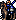
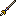

Character Overview
Finn is the beloved Lance Knight that serves Leif throughout the entire game. He joins as soon as Chapter 1 starts and is
significantly stronger than most of your starter units.
Being Level 7 and already having access to a personal weapon, with a Brave Effect no less, Finn acts a secondary Jagen
that can easily take care of most enemies in the early-game with little to no effort, as long as he has his Brave Lance
in hand.
Despite having shaky growth rates and a PCC of 1, Finn's Miracle skill, personal weapon, and early-game usefulness makes him
a great unit to use. By the time Finn requires some good level-ups, you will have access to the appropriate Crusader Scrolls
that will keep him viable throughout the entire game.
Being a mounted unit, Finn must dismount to be used in some indoor maps, and some outdoor/indoor hybrid maps. He cannot use
lances while dismounted, so keep this in mind as you play the game and decide who to deploy.
Base Stats and Growths
| Level 7 Lance Knight  | HP | STR | MAG | SKL | SPD | LCK | DEF | CON | MOV |
|---|---|---|---|---|---|---|---|---|---|
| Base Stats | 28 | 8 | 1 | 8 | 11 | 5 | 7 | 9 | 8 |
| Growth Rates | 60% | 35% | 5% | 30% | 35% | 45% | 30% | 10% | 1% |
Finn's base stats are great. He has some of the highest DEF compared to most of your starter units, has a high MOV, and an even higher CON for being mounted. One of Finn's greatest traits is that he can easily capture early-game units with his high CON, MOV, and great SPD, which has a base of 11. He also boasts a commendable 8 STR and SKL, making him a reliable combat unit in the beginning. Even without his personal weapon, Finn is one of the best candidates for capturing, simply because he is a mounted unit and can easily transfer captures units with other player units with high CON.
This Lance Knight's growth rates are a bit shaky, though. He has a 30-35% growth rate in STR, SKL, SPD, and DEF, which are all vital combat stats. It's easy for Finn to have quite a few bad level-ups. The good news is that since Finn is already level 7, he will receive significantly low EXP from killing/capturing enemies, meaning that he won't level up all that much in the early-game, giving you plenty of levels to work with once you receive the vital Crusader Scrolls, such as the Hoðr, Baldr, Ced, and Odo scrolls. Once you do receive these scrolls, you can work around Finn's mediocre growth rates with them. Also, I should mention that Finn has a great 45% growth rate in LCK, and this is important, as Finn's personal skill, Miracle, activates based on the LCK stat. More on that later.
Other Stats
| Weapon Ranks | Skills | PCC | Leadership Stars | Movement Stars | Promotion Gains |
|---|---|---|---|---|---|
| Lance - B |
Miracle | 1 | 1 | 0 | STR + 2 / MAG + 1 / SKL + 3 / SPD/DEF + 2 / CON/MOV + 1 / Lance Rank + 1 |
A B rank in Lances, and a +1 in Lance Rank as a promotion bonus means Finn can wield every lance in the game besides one other PRF lance. A D rank in Swords is a bit of a let-down, as Finn won't be using swords most of the time since he's super useful as an outdoor combat unit. However, leveling Finn's sword rank isn't difficult, as he has quite a bit of bulk, strength, and speed to fight decently with an Iron Sword, at least in the early-game. Finn's other promotion bonuses are great, as he receives nice bonuses to STR, SKL, and SPD/DEF. He even gains an additional CON/MOV! It ain't much, but these bonuses simply boosts Finn's usefulness by a decent margin.
Having a PCC of 1, Finn might struggle to kill enemy units as you progress through the game, but his personal weapon and his SPD makes it easier to one-round enemies. No movement star is disappointing, but Finn's amazing MOV is enough to justify why an additional movement star might be broken. Finn also has a leadership star, so if nothing else, you may deploy him simply to boost your army's hit/avoid.
Finally, we must discuss Finn's Miracle skill. It has a User's LCK x 3 activation rate, and if it does activate, then the unit's avoid is increased by 100%, making them pretty much immune to any attack as long as Miracle activiates. This is the best survivability tool in the game, and makes Finn an excellent tank as long as his LCK is high. If you manage to cap Finn's LCK to 20, then Finn will have a 60% chance to just dodge any fatal attack, no matter what. Even in the early-game, Finn's PRF grants a LCK bonus, so he'll have a good chance to null a fatal attack even in the early game. Definitely use this to your advantage if you have nothing else.
PRF's and Support Bonuses
| Name | Range | Uses | Weight | Might | Hit | Crit | Effects |
|---|---|---|---|---|---|---|---|
| Brave Lance  | 1 | 60 | 9 | 13 | 70% | 10% | Grants Brave Effect and LCK + 10 |
The Brave Lance is one of the best PRF's in the game due to its availability. Finn has it in his starting kit, and it has great capturing ability because of its Brave Effect. Given the fact that Finn has a decently high SPD already, he can possibly quadruple attack enemies even while he's capturing. Overall, this PRF is great for capturing.
Granting a LCK bonus of 10, Finn's Miracle skill has a much higher chance to activate, even in the early-game. By having this bonus, this PRF indirectly boosts Finn's survivability as well. Definitely use this weapon to your advantage. It's made available to you so early on for a reason!
Supports: None
Supported by: Leif, Nanna
Character Tips
Finn naturally has a high avoid due to his good LCK growth and the bonus from his Brave Lance. However, his avoid can be increased even further by having Nanna close to him during combat. Nanna supports Finn, granting an additional 10% to hit/avoid/etc., and she has the Charisma skill, which boosts his avoid even further. A Finn with capped LCK holding his Brave Lance with Nanna less than 3 tiles away is pretty much invincible because of Avoid bonuses and Miracle. Just a tip!
As I mentioned earlier, don't fret about Finn's growth rates. By the time your characters reach Finn's base level, and by the time Finn is receiving the standard amount of EXP for killing enemy units, you will have access to good Crusader Scrolls. I don't have a list of ones you should use, as Finn benefits from all of them. All I will say is that the Heim scroll is a bit useless since Finn has no need for MAG growth rate bonuses, and the Bragi scroll is an excellent choice for increasing Finn's LCK and making the most of his Miracle skill.